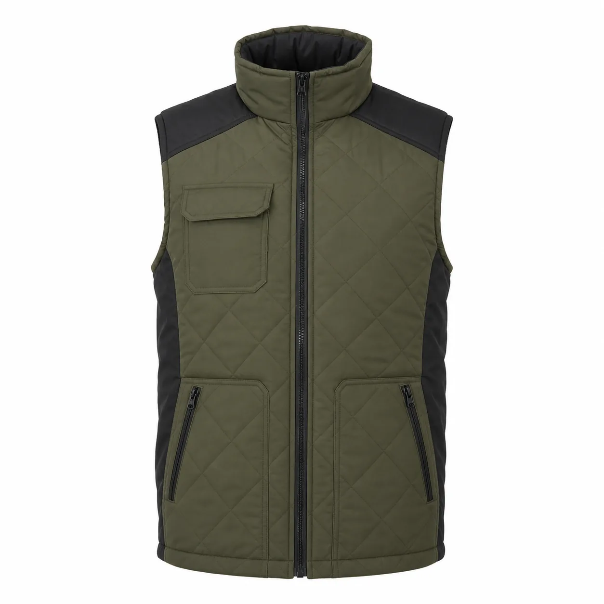

Haki Siyah Kapitone Kışlık İş Yeleği
Silikon elyaf dolgulu haki kışlık iş yeleği; baklava kapitone gövdesi, siyah omuz takviyeleri ve fermuarlı alt cepleriyle soğuk çalışma alanlarında dayanıklı katmanlı kullanım için tasarlanmıştır.

Haki Siyah Kapitone Kışlık İş Yeleği üretim ayrıntıları
Haki Siyah Kapitone Kışlık İş Yeleği, kurumsal ekiplerde görev işlevi ve düzenli görünümü bir araya getirmek üzere planlanan İş yelekleri modellerindendir. Haki ve siyah | Silikon elyaf dolgulu | Baklava kapitone | Omuz takviyesi | Fermuarlı cepler özellikleri modelin temel çerçevesini oluşturur.
Malzeme seçimi softshell, polar veya dolgulu yüzey üzerinden; çalışma ortamı, vardiya süresi, hareket ve bakım düzeni dikkate alınarak yapılır. Dikiş, cep ve kapama noktaları numunede kontrol edilir.
Logo ölçüsü ve konumu kumaş yüzeyiyle birlikte değerlendirilir. Onaylanan nakış veya baskı uygulaması model koduna bağlanarak tekrar sipariş standardı korunur.
Adet, beden dağılımı, renk, teslimat noktası ve hedef tarih yazılı paylaşıldığında kumaş ve üretim planı netleştirilir. Seri üretim yalnız onaylanan kapsam üzerinden ilerler.
Model özellikleri
- Haki ve siyah
- Silikon elyaf dolgulu
- Baklava kapitone
- Omuz takviyesi
- Fermuarlı cepler
Benzer ürünler
Siyah Çok Cepli Dolgulu İş Yeleği
KT-YL-013 kodlu kurumsal üretim modelini inceleyin.
Ürün detayına gidin →Siyah Reflektif Biyeli Softshell İş Yeleği
KT-YL-014 kodlu kurumsal üretim modelini inceleyin.
Ürün detayına gidin →Lacivert Siyah Cepli Polar İş Yeleği
KT-YL-015 kodlu kurumsal üretim modelini inceleyin.
Ürün detayına gidin →Sık sorulan sorular
Minimum sipariş kaç adettir?
Bu modelde özel üretim minimum siparişi 50 adettir.
Logo uygulanabilir mi?
Kumaşa göre nakış, DTF, transfer veya serigrafi uygulanabilir.
Farklı renk üretilebilir mi?
Kumaş ve aksesuar uygunluğuna göre kurumsal renk planlanabilir.
Numune hazırlanabilir mi?
Proje kapsamına göre seri üretim öncesinde numune hazırlanabilir.
Beden dağılımı nasıl belirlenir?
Çalışan listesi ve numune kontrolüyle beden dağılımı yazılı onaya alınır.
Teklif için ne gerekir?
Adet, beden, renk, logo, teslimat şehri ve hedef tarih paylaşılmalıdır.
KT-YL-020 için teklif alın.
Ürün, adet, beden ve logo bilgilerinizi paylaşın.